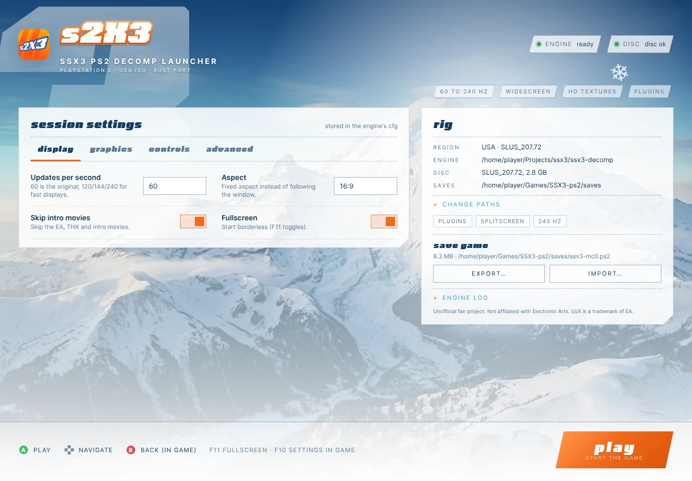

Disc detection
Finds the USA disc image, checks SLUS_207.72 and keeps the path for the next start.
THE UNOFFICIAL SSX 3 LAUNCHER // PS2
s2X3 finds your disc, builds the native port and keeps every setting, save and log in one place. No emulator. No game data. No account.
Finds the USA disc image, checks SLUS_207.72 and keeps the path for the next start.
Every engine option is generated from a schema. Changes from the F10 overlay are merged, never wiped.
Download and build ssx3-decomp from the app, with an update check when the repository moves.
Export and import the PS2 memory card with timestamped backups before anything is replaced.
Cross pad, left stick or right stick, with air gating so acceleration never flips by accident.
Button prompts follow the connected pad type, so every hint reads like the console original.
The launcher for the native SSX 3 port. Your disc, your settings, one place. It is not an emulator, a recompiler or a game distribution.
Linux and Windows alpha. macOS builds follow.
Heads up: the installer is not code-signed. As an open-source fan project there is no signing certificate, so Windows may show a SmartScreen warning. If in doubt, build it yourself from source.

Download the s2X3 installer from the releases and run it. Updates ship the same way.
Drop the USA ISO into the window or browse for it. s2X3 verifies the game id.
One button clones ssx3-decomp, runs setup and builds the game locally.
Press play. Settings, saves and logs stay in the launcher, the game gets a clean child process.
The launcher, settings, saves and engine setup work on Linux, with a Windows alpha installer available now. macOS follows. Menus and intro fill, performance presets, Tricky courses and audio are on the roadmap.
| PIECE | STATE |
|---|---|
| Launcher | Done |
| Settings | Done |
| Saves | Done |
| Engine update | Done |
| Menu fill | Next |
| Tricky courses | Later |
| Multiplayer | Later |
SLUS_207.72)Tested on Intel Iris Xe: 60 fps with the heavy effects off. Integrated GPUs and older cards may need them off too.
The native port, recompiler and renderer come from ssx3-decomp, written by Anders Fischer Nielsen and released under the MIT license.
Own disc required. s2X3 ships no game data and is not affiliated with Electronic Arts. SSX is a trademark of EA.